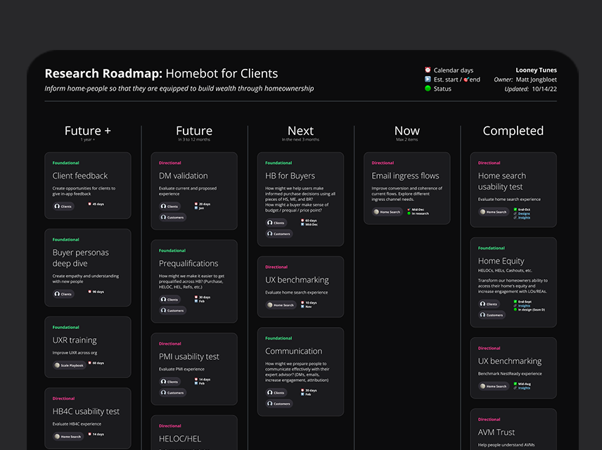
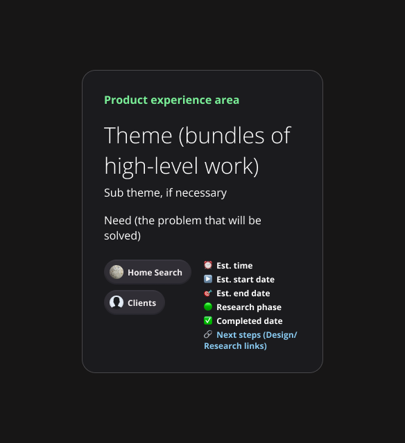
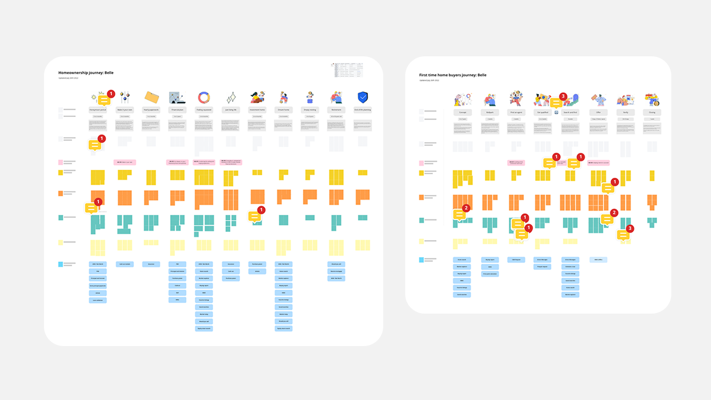

Context
From 10 product people to more than 30
- When I joined, the company was at an early stage of research maturity.
- Most user research consisted of haphazard customer interviews and scrappy unmoderated usability tests.
- Many employees had little exposure to customers.
- The number of product people grew from around 10 to more than 30 during my time there.
Opportunity
Better research, done by more people
Democratisation, involving non-researchers in research, is frequently debated in the product research field. I think it’s more useful to recognise the research these people already do and improve its quality than to ignore it.
So I focused on scaling research: creating a research repository, establishing a research roadmap, leading an Exposure Hours KPI and managing the UXR tools budget.
Approach
A repository, a roadmap and exposure hours
- Research repository. I created a repository in Dovetail with structured templates for common methods and workshops, a co-created global tagging taxonomy, onboarding materials and an FAQ for new hires.
- Research roadmap. I created a roadmap aligned with business strategy that gave the right stakeholders visibility.
- Journey mapping. I led a workshop to produce a foundational map of how we support people through their homeowner and buying journeys.
- Exposure Hours KPI. I led the KPI, resulting in an average of 50% exposure for R&D to our users’ experiences.
- Teaching. I presented on the importance of user research and the skill of listening deeply.
- Tools. I managed the UXR tools budget so the team had the right tools: Lookback, User Interviews, UserTesting, FullStory and Dovetail.


Outcome
47 projects, 5,862 highlights, 117 insights
- Within the first year of the repository’s launch, we had created 47 projects, 5,862 highlights and 117 insights.
- Confidence in conducting research improved, communication about ongoing research improved, and findings were shared more widely, creating teams of missionaries rather than mercenaries.
- One of my highlights was watching a team of engineers present user findings, problems and solutions, and how they’re helping people to be more successful, to the entire company.
